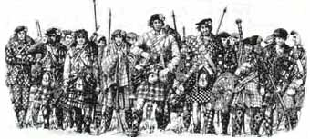

Rise, Rise, Lowland and Highland men!
Debout, Hautes et Basses Terres
Glenfinnan - 19th August 1745
Presumedly by James Hogg
Tune
Same tune as Blue Bonnets over the BorderSequenced by Ch.Souchon
|
To the lyrics:
This song is usually ascribed to James Hogg , since it was included in the "Poetical Works of the Ettrick Shepherd", vol. V, published by Prof. J.S. Blackie (1809 - 1895) at Glasgow in 1840, after Hogg's death in 1835. However the song is to be found neither in the second volume of the "Relics" (1821), nor in the comprehensive "Jacobite Minstrelsy" edited by Robert Malcolm in 1828 and 1829. Yet it appears in the July 1833 copy of "Fraser's Magazine" (volume 33, page 52) in an article entitled "The Shepherd's Noctes Ambrosianae" where the song is preceded by the remark: "The following... is to our ears a most magnificent strain, - a Jacobite ballad, worth all the "Jacobite Relics", always excepting "Donald McGillavray", which is no relic at all, but one of Hogg's own" . The inference could be that "Rise, rise", in contrast, is genuine collected stuff and served Sir Walter Scott as a model for his "Blue Bonnets over the Border" , not the contrary. Consistently Rev. J. Douglas Borthwick printed this song in his "History of Scottish song without author's name in 1874 (Montreal). |
A propos du texte:
Ce chant est habituellement attribué à James Hogg , parce qu'il apparaît dans le recueil "Oeuvre poétique du Berger d'Ettrick", vo. V, publié par le Prof. J.S. Blackie (1809 - 1895), à Glasgow en 1840, après la mort de Hogg en 1835. Toutefois le chant ne se trouve ni dans le second volume des "Reliques" (1821), ni dans la très complète "Jacobite Minstrelsy" compilée par Robert Malcolm en 1828 et 1829. Il figure en revanche dans le numéro de juillet 1833 du "Fraser's Magazine" (volume 33, p.52), dans un article intitulé "Nuits Ambroisiennes du Berger", précédé de la remarque: "Le poème suivant...est selon nous un chant maqnifique, une ballade Jacobite qui vaut à elle seule toutes les "Reliques Jacobites", à l'exception, bien sûr, de "Donald McGillavray", qui n'est en aucune façon une relique, mais une création propre à Hogg" . On pourrait en déduire que ce "Debout, debout" est un chant effectivement collecté et qu'il a servi de modèle à Walter Scott pour ses "Bonnets Bleus , et non le contraire. En conséquence, le Rév. J. Douglas Borthwick a imprimé ce chant dans son recueil "Histoire du chant écossais" publié à Montréal en 1874, sans préciser de nom d'auteur. |

|
CHORUS:
Rise! Rise!
1. Down from the mountain steep,
(1) Alba= Scotland (Gaelic) |
REFRAIN:
Debout!
1. De vos monts descendez,
(1) Alba= Ecosse (gaélique) Trad Ch.Souchon (c) 2004 |
|
Glenfinnan
is a narrow vale bounded on both sides by high and rocky mountains, between which the river Finnan runs. This glen forms the inlet from Moidart into Lochaber, and at its gorge is about fifteen miles west from Fort William.
On landing, the prince was received by the laird of Morar at the head of 150 men, with whom he marched to Glenfinnan, where he arrived about eleven o'clock. Charles had expected to find a large "gathering of the clans" in the vale awaiting his approach; but, to his great surprise, not a human being was to be seen throughout the whole extent of the lonely glen, except the solitary inhabitants of the few huts which formed the hamlet. Chagrined and disappointed, Charles entered one of these hovels to ruminate over the supposed causes which might have retarded the assembling of his friends. After waiting about two hours in anxious suspense, he was relieved from his solitude by the distant sound of a bagpipe, which broke upon his ear, and by its gradual increase, it soon became evident that a party was coming in the direction of the glen. While all eyes were turned towards the point whence the sound proceeded, a dark mass was seen overtopping the hill and descending its side. This was the clan Cameron , amounting to between 700 and 800 men, with Lochiel, their chief, at their head. They advanced in two columns, of three men deep each, with the prisoners who were taken in the late scuffle at High Bridge . Source: www.electricscotland.com/history/charles/6.html Click on button "Map" to spot places. |
Glenfinnan
est une vallée étroite bordée des deux côtés par de hautes montagnes rocheuses entre lesquelles coule la rivière Finnan. Ce glen permet d'entrer depuis Moidart dans le massif de Lochaber et sa gorge est à environ à l'ouest 25 km de Fort William.
En débarquant, le Prince avait été accueilli par le seigneur de Morar accompagné de 150 hommes et ils se mirent en route ensemble pour Glenfinnan où ils arrivèrent vers 11 heures. Charles s'attendait à trouver un large "rassemblement des clans" dans la vallée pour lui souhaiter la bienvenue, mais à sa grande surprise, il n'y avait pas âme qui vive dans tout le glen, si ce n'est les habitants des quelques chaumières qui composaient le hameau. Déçu et blessé, Charles entra dans une de ces cabanes pour réfléchir aux causes possibles du retard avec lequel ses partisans se rassemblaient. Après presque deux heures d'attente anxieuse, il entendit le son lointain d'une cornemuse qui allait en s'amplifiant et il devint bientôt évident qu'un troupe faisait route en direction du glen. Tous les regards étaient fixés dans la direction d'où provenaient les sons, quand on vit soudain une masse compacte apparaître à l'horizon. C'était le Clan Cameron fort de 700 ou 800 hommes avec leur chef Lochiel à leur tête. Ils s'avançaient sur deux colonnes, en rangs de trois chacune et ils venaient avec les prisonniers qu'ils avaient faits à High Bridge . Source: www.electricscotland.com/history/charles/6.html Cliquer sur le bouton "carte" pour situer les localités. |